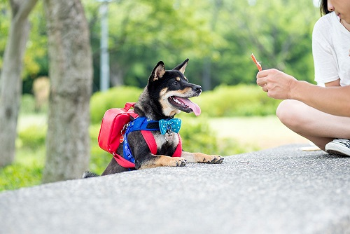

Shiba là giống chó kĩ tính, chúng sống rất có ý thức, luôn muốn giữ cơ thể mình sạch sẽ. Loài chó này có thói quen tự vệ sinh thân thể, liếm lông, liếm chân giống loài mèo. Cách di chuyển của Shiba cũng khéo léo để hạn chế tối đa các vết bẩn bám dính vào lông.
Shiba có sự khác biệt khá nhiều trong tính cách giữa 2 giới. Trong khi chó đực rất năng động, vui vẻ và thích hoạt động thì chó cái dịu dàng, hiền hoà hơn. Vậy nên dù là người hướng ngoại hay hướng nội, bạn cũng có thể tìm cho mình một chú chó Shiba thích hợp để bầu bạn.
Back